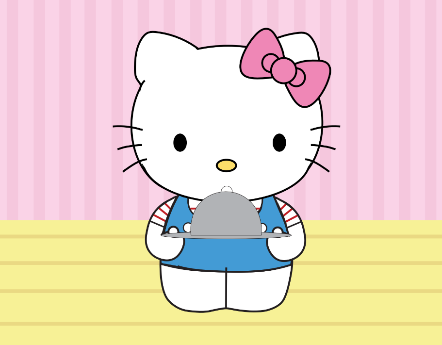

ABOUT ME
My Education
I am earning my degree in Game Design & Development at Rochester Institute of Technology, where I am currently focusing on game design and development. I have also learnt some web development and design skills, and can create basic sites with extra functionality.
My Skills
I am proficient in C#, HTML, CSS, and Javascript, plus I have some knowledge in C++ and Typescript. I also use Visual Studio, Visual Studio Code, and Unity as my main tools for development. Additionally, I have some experience with Maya, Substance 3D Painter, Unreal, Godot, Piskel, WWise, and Pro Tools.

My Experience
I have studied as a game design & development major for the past 3.5 years, creating simple games and programs that handle some of the basic functions of coding. I am also interested in the creation of music and art for personal use and for projects in my classes, like the image above.
Overall...
I am an aspiring Game Developer learning about game design and development who wants to create entertaining and captivating games and experiences that players will enjoy playing. I aim to not only improve my skills in game design, but also my skills in music composition and art as they will greatly help to elevate any game I help to make.
I am open to new opportunities and experiences, and am willing to learn new ideas and skills to pursue new ventures. If you are interested in reaching out about any of my work, or just have any questions in general, you can reach my via one of the methods located down below. Thank you for giving me the time to show what I can do and what I have been up to, and I hope you have a great day!